14–15 August 2024 · Valais
Zermatt
- 10.1km
- distance
- 1220m
- descent
- ~30%
- steepest

The VLM says what is in view and how risky it is. The robot turns that into where to walk, in alpine and urban terrain.
Autonomous navigation in diverse real-world environments remains one of the greatest challenges in robotics. It demands both robust low-level motion control to handle diverse terrain and high-level reasoning to interpret environmental cues. We present ROAM (Robust Open-world Autonomous Mobility), a system that enables legged robots to perform kilometer-scale navigation in complex alpine and urban settings. ROAM combines the world knowledge of a Vision-Language Model (VLM), pre-trained on internet-scale data, with robust locomotion and local planning policies learned in simulation via reinforcement learning (RL). The VLM provides common-sense reasoning and semantic interpretation of the scene, assessing risks, interpreting signs, and producing semantic labels with associated navigation costs. An open-vocabulary segmentation module converts these labels into a dense, real-time risk map, which conditions two pre-trained RL policies responsible for agile locomotion and local navigation: effectively coupling high-level VLM reasoning with low-level physical control. Real-world experiments showed the system’s ability to autonomously navigate a wide range of complex real-world environments. The robot completes kilometer-long hikes with minimal intervention, interprets signs to avoid danger, and evaluates its environment to identify safe areas on which to step. This work represents a step toward the reliable deployment of systems in unstructured environments. However, it also underscores the challenges that remain in VLM reliability and spatial reasoning, indicating that foundational models are a crucial component but not yet a complete solution for navigation in the wild.
gravel_path 0 grass 0.5 cow 1
 Indoor hall
Indoor hall
 Campus
Campus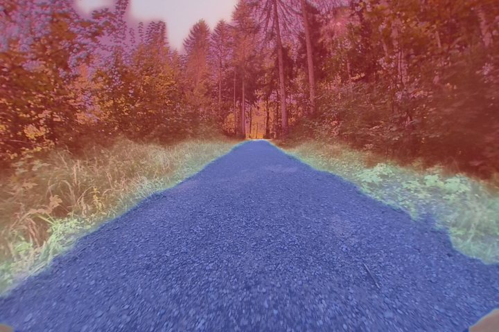
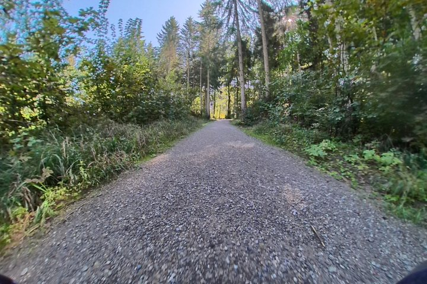
Forest road
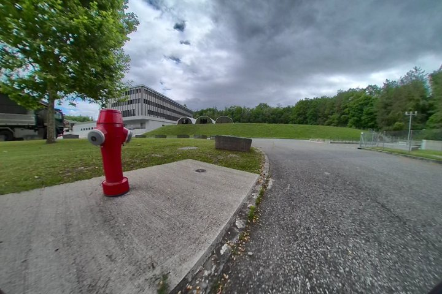
Test site
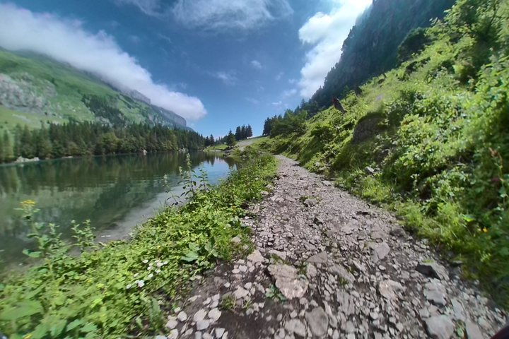
Seealpsee
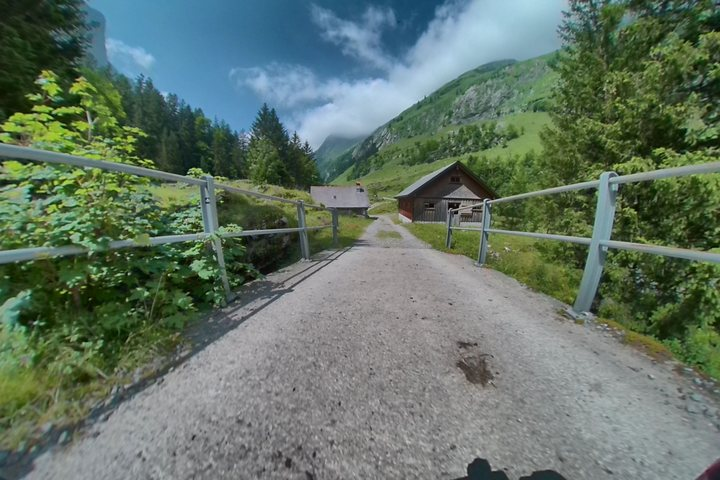
Alpine huts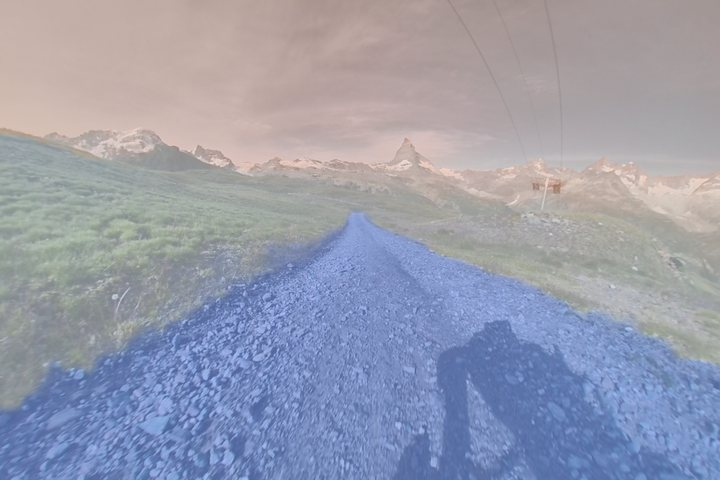
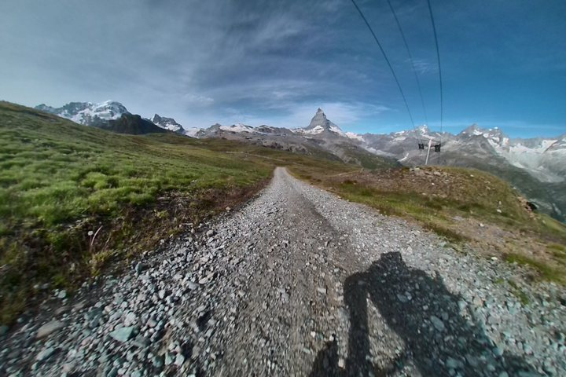
Zermatt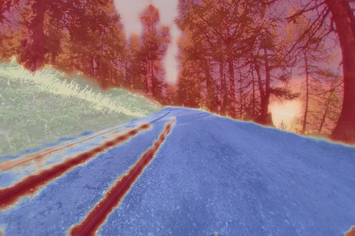
 Mountain railway
Mountain railway
 No sign
No sign
 Mine sign
Mine sign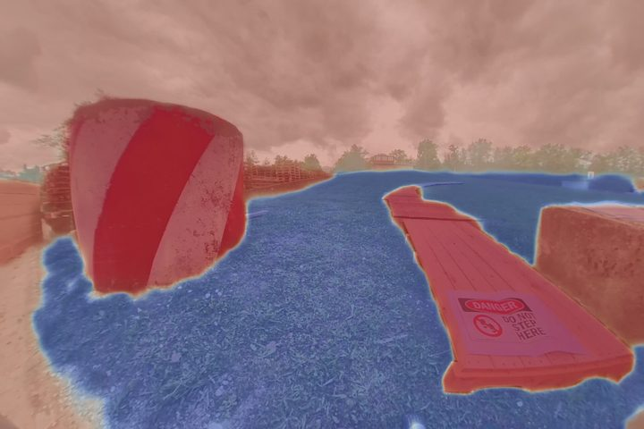
 “Do not step”
“Do not step”
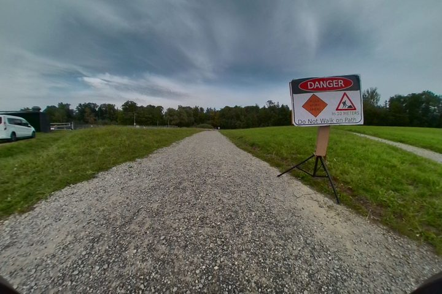
Danger signA person with a remote can drive this robot over almost any terrain. What the robot lacks is common sense: gravel is fine, a lake is not, and a sign can close a trail. A vision-language model (VLM) has it. ROAM (Robust Open-world Autonomous Mobility) is our system that hands that common sense to the robot's maps and legs.
The VLM never outputs coordinates or speeds. It only names what it sees and says how risky each thing is. Everything that has to be fast and precise happens downstream.
Every picture is from the same moment of the Zermatt hike (15 August 2024), with the values logged on the robot.

Two long hikes in the Swiss Alps test how far the system goes.
Play the video and the robot moves along the map; the other camera plays in the corner (click it to swap). Click the route, a dot or the profile to jump there. Right-drag (or two fingers) to tilt.

Play the video and the robot moves along the map; the other camera plays in the corner (click it to swap). Click the route, a dot or the profile to jump there. Right-drag (or two fingers) to tilt.

Fly along both hikes on the real terrain: the robot walks its GPS track, its own camera plays as you scroll, and every logged moment shows what it saw. Scroll, or press Play.
Enter the expedition →Behind the scenes: the setup, the 2.38 km lakeside route, cows on the trail, and the team explaining what the robot is doing. 5 min, with sound.
Geometry can't tell an open path from a closed one. Text and symbols can, and ROAM reads them.
No signMine sign“Do not step”Danger signETH Hönggerberg, Zurich. Pick a trap, then pick who walks it.

Arche test site. The robot's own camera, with the maps ROAM builds from the VLM's labels.

The locomotion policy reads a steppable layer next to the terrain height. It learns what that layer means in simulation; on the robot, the VLM fills it in.
Non-steppable patches (red) come from Perlin noise. The policy sees them in its foot-height scan and is penalized for stepping on them.
Arche test site. A sign on the wall reads "WARNING: Exploding Cans".
Third-person view with the steppable map (top left) and elevation map (bottom left) burned in.
The VLM labels the peels as risky and not steppable, so the robot places its feet around them. Without semantics, the baseline steps on them. ETH Zurich rooftop.
Given only a goal, where does the robot choose to walk? Geometry says "anything flat". ROAM prefers what a person would: paths, cleared ground, the side away from the tracks.
Arche test site and a snowy city passage. Each run gives the local navigation policy a single goal location and nothing else: no waypoints and no global path. The policy picks the route on its own from the risk and preferred maps, and the geometry-only baseline gets the same goal.
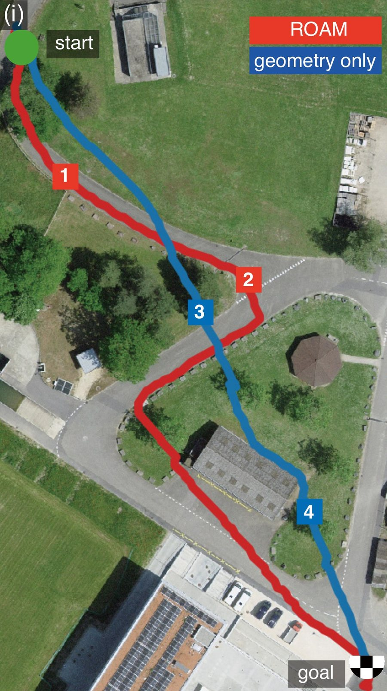
ETH Hönggerberg. One continuous run starts inside a building, crosses the campus, heads out onto field and forest trails and farm roads, and ends in the next village. The system stays the same the whole way; only what the VLM sees changes.
The robot's front camera (left) and the risk image ROAM builds from it (right), sped up 8×. Below: every answer the VLM gave on this run (one column each), the labels it used and the risk it gave them. Labels for floors and pillars give way to cobblestones and buildings, then to gravel, grass and trees. Click the chart to jump the video there.
A cart and barrier tape block the trail. Watch what the robot did (4× speed), or jump to a step. Hönggerberg.

We used the same system everywhere. No data was collected for any specific place.
Fig. 2. Mountain trails (A–E), forest (F), grass (G), campus (H), roads (I), indoor spaces (J–L), smoke (M), train tracks (N) and signs (O).
@article{miki2026roam, title = {Bridging vision-language reasoning and learned control for legged navigation in the wild}, author = {Miki, Takahiro and Schmid, Robin and Patel, Manthan and Tuna, Turcan and Richter, Julia and Nubert, Julian and Lee, Joonho and M{\"u}ller, Matthias and Hutter, Marco}, journal = {Science Robotics}, year = {2026}, doi = {10.1126/scirobotics.aee1549} }